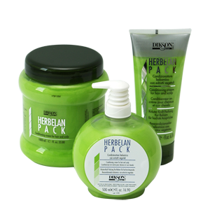
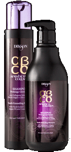

Почему косметика DIKSON?
1. Более 350 стойких цветовых оттенков профессиональной колористической палитры! Возможность смешивания оттенков между собой делают палитру цветов БЕСКОНЕЧНОЙ!
2. 100% ПОПАДАНИЕ В ЦВЕТ! ОКРАШИВАНИЕ СЕДИНЫ!
3. ЩАДЯШЕЕ, МЯГКОЕ ВОЗДЕЙСТВИЕ
НА ВОЛОСУ И КОЖУ ГОЛОВУ!
4. Иновационные продукты:

- NEW: LUXURY CAVIAR - линия средств на основе черной икры против старения.
- NEW:B-FILLER - ИНТЕНСИВНАЯ ПРОЦЕДУРА: "ГЛИКОЛИЗИРОВАНИЕ ВОЛОС". ПРОЦЕДУРЫ ВЫПОЛНЯЮТСЯ ТОЛЬКО В САЛОНАХ КРАСОТЫ!
- NEW: ARGABETA LINE UP - ДВЕ УНИКАЛЬНЫЕ ЛИНИИ ПО УХОДУ ЗА: ОКРАШЕННЫМИ И ПОВРЕЖДЕННЫМИ ВОЛОСАМИ!
- NEW: СТВОЛОВЫЕ КЛЕТКИ СИРЕНИ В КАЖДОМ продукте - StamiKER! AFREA COLOR - ПЕРМАНЕНТНЫЙ КРАСИТЕЛЬ БЕЗ АММИАКА c Anti-Age Комплексом ! COLOR SYSTEM/ КАПЛИ ЦВЕТА - ЭКСКЛЮЗИВНЫЙ ПРОДУКТ!
- NEW:DICOLOR - прямой краситель для тонирования волос!
- NEW:FULL COLOR - эксклюзивный корректор цвета на основе натуральных коспонентов!
5. Уникальные результативные ампульные препараты для лечения кожиголовы и восстановления структуры волос!
6. Разумная цена на продукцию снижает себестоимость окршивания в салоне : Например, один тюбик красителяDIKSON (120мл)
стоит 462руб, он равен двум стандартням тюбикам по 60 мл!!!
7. Огромный выбор продукции позволяет осуществлять уход в домашних условиях, что гарантирует высокие объемы продаж в салонах красоты!
8. Собственная АКАДЕМИЯ ПАРАХМАХЕРСКОГО ИССКУСТВА,на базе которой проводится обучение от азов до совершенсива, под руководством сильнейших преподователей,ЧЕМПИОНОВ МИРА HAIR - индустрии!
9. Персональный рекламный пакет по дизайнерскомуоформлению салонов красоты и магазинов!
Интенсвное воставновление, лечение волос и кожи головы
Подробнее о косметике DIKSON
ОКРАШИВАНИЕ
AFREA
Краситель сохраняет качество волос и возвращает им естественную красоту, что позволяет многократно окрашивать волосы, создавая широкую гамму оттенков на волосах разного уровня тона. Во время окрашивания клеточно-мембранный комплекс, родственный тканям волос, способствует регенерации поврежденных участков волосяного стержня на молекулярном уровне. Кремовая основа придает волосам ослепительное сияние.
DIKSON NATUR COLOR
Перманентный краситель без аммиака Уникальный краситель с максимально ухаживающим комплексом содержит: масло жожоба, экстракт алоэ, протеины шелка. палитра 54 модных оттенка; 100% закрашивание седины; 100% предсказуемый цвет; стойкое окрашивание и тонирование (полуперманентное окрашивание);
DIKSON PASTEL COLOR
СУПЕР БЛОНДЫ ПЕРМАНЕНТНОГО КРАСИТЕЛЯ EXTRA CHART осветляют на 5-6 уровней; работают с окислительными эмульсиями: 9%, 12% в пропорции 1:2
DIKSON COLOR EXECUTIVE TA’AL
ПЕРМАНЕНТНЫЙ КРАСИТЕЛЬ ТА‘АЛ с протеинами шелка палитра 101 модный оттенок; 100% закрашивание седины; стойкое окрашивание 1:1 работает с окислительными эмульсиями 3%; 6%; 9% 12%; тонирование (полуперманентное окрашивание); 1:2 работает с окислительными эмульсиями DEVELOPER; улучшает структуру волоса благодаря содержанию: гидролизованный кератин; протеины шелка; пантенол; коллаген; экстракт мальвы; экстракт ромашки
УХОД ЗА ВОЛОСАМИ
ARGABETA

Питательный шампунь для волос на основе масла Арганы с экстрактом морских водорослей Выравнивает структурные различия от корней до кончиков, эффективно восстанавливает волосы. Мягко очищает волосы и кожу головы. Сбалансированный комплекс микронизированных водорослей и масла Арганы, обладают мощным восстанавливающим и укрепляющим действием. Морские водоросли богаты жирными кислотами, аминокислотами, витаминами и минеральными веществами. Рекомендуется как шампунь-уход для всех типов волос, особенно для окрашенных и поврежденных.
ArgaBeta beauty mask
Интенсивно восстанавливающая и питательная маска с маслом Арганы и Бета-каротином Моментально действующий комплекс для окрашенных и поврежденных волос укрепляет, не утяжеляя структуру, устанавливает оптимальное равновесие волокна и обладает комплексом anti-age. Аминокислоты морского происхождения защищают, увлажняют и укрепляют волосы, делая их более объемными и эластичными. Арахисовое масло питает, увлажняет, способствует укреплению корней. Витамин Е омолаживает структуру волоса.
HERBELAN PACK
Растительный бальзам с ментолом, маслами ромашки и мальвы. Один из самых эффективных продуктов DIKSON. В его состав входит травяная кислота, нейтра- лизующая продукты вялотекущего окисления после химических обработок, особенно после блондирования волос. Рекомендуется в качестве средства для ухода за окрашенными и освет- ленными волосами, так как благодаря действию травяной кислоты выравнивается структура, и волосы сохраняют свой блеск. Подходит для всех типов волос, особенно для жирных. Масла ромашки и мальвы обладают противовоспалительным и успокаивающим действием. Ментол дезинфицирует, тонизирует и охлаждает кожу головы, стимулирует ее кровоснаб- жение.
SUTIL
2-х фазный спрей – кондиционер восстанавливающий. Cпрей мгновенного действия с «летучими» кондиционерами и «живым» кератином Кондиционер-спрей восстанавливает структуру волоса, облегчает их расчесывание, снимает статическое электричество и придает изумительный блеск. Выравнивает структурные различия поврежденных волос по всей длине, не перегружая их. Средство со сложными протеинами и кондиционирующими полимерами позволяет мгновенно восстановить слабые и поврежденные волосы. Обладает антистатическим эффектом.
PROFESSIONAL BALSAM
Профессиональный бальзам-кондиционер Прекрасно увлажняет, ухаживает и восстанавливает структуру волос после всех химических процедур. Идеальное сочетание с шампунями линии «ONE’S» Содержит экстракт масла манго, регулятор pH – лимонную кислоту и ментол, который расслабляет и одновременно тонизирует мышцы кожи головы, обеспечивает питание луковиц.
B82 CONDITIONER CREAM
Восстанавливающий крем-кондиционер с провитамином в5 Интенсивное восстановительное кондиционер-лечение для чрезвычайно сухих и повреж- денных волос. Увеличивает естественную стойкость волос к внешним негативным факто- рам. Рекомендуется не только как маска для интенсивного лечения, но и как постоянный уход для поддержания оптимального состояния волос. Идеален для окрашенных и повреж- дённых волос.Фруктовые кислоты, входящие в состав В82, обеспечивают низкий уровень pH, что быстро восстанавливает структуру волос.
RESTRUCTURING HAIR MASK В 83
Восстанавливающая маска для волос с маслом Арганы Действие: Инновационный, бережный и интенсивный уход для поврежденных и пористых волос. Масло Арганы богато жирными, растительными кислотами, антиоксидантами, которые стимулирует обновление клеток волоса, делают структуру эластичной. Комплекс В83 содержит в себе уникальные компоненты, реконструирующие внутреннюю структуру волоса, питает их, омолаживает структуру и придает им роскошный блеск. Маска богата цветочными экстрактами, нежно ухаживающими за кожей головы и волосами. Парфюмерная композиция уносит Вас в страну обволакивающей неги. Активные компоненты: Масло Арганы, фруктовые кислоты. Результат: Реконструкция волос, укрепление корней.
REPAIR MASK FOR COLOUR-TREATED HAIR B 84
Восстанавливающая маска для окрашенных и подвергнутых химической обработке волос Действие: Глубоко и качественно восстанавливает окрашенные, обесцвеченные и подвергнутые химической обработке волосы. Гидролизированный кератин, в составе маски оказывает защитное и восстанавливающее воздействие, питает и укрепляет волосы, возвращая им жизненную энергию. Волосы наполняются светом, легко расчесываются, становятся шелковистыми и приобретают блеск. Используя маску Вы получите колоссальный объем волос и ощущение магического совершенства Вашей прически. Активные компоненты: Гидролизированный кератин, фруктовые кислоты. Применение: Продукт использовать только как классическую маску для волос, выдержав 15-20 минут, затем смыть.
REPAIR MASK with Vitamin С and Moringa exstract
Восстанавливающая маска с витамином С и экстрактом моринги Действие: Великолепная маска-кондиционер для волос после окрашивания и химической обработки. Нейтрализует вялотекущие процессы окисления, возвращая волосы к естественному pH, надолго сохраняя цвет. Фруктовые кислоты надолго закрепляют цвет на окрашенных волосах, наделяют их перламутровом блеском. Идеально разглаживает волосы, создаёт на волосах легкую, дышащую мембрану. Содержит экстракт моринги, оказывающий глубокое защитное и восстанавливающее воздействие на волосы. Активные компоненты: Витамин С, экстракт Моринги. Применение: В качестве глубокого, интенсивного восстановления волос, нанести на волосы на 10-15 минут. В качестве кондиционера нанести на волосы, выдержать 1-3 минуты, смыть водой.
832 RESTRUCTURING MOISTURIZING MASK
Восстанавливающая увлажняющая маска для волос Действие: Восстанавливающая маска с уникальным сочетанием молочных аминокислот, которые являются проводниками для питательных элементов во внутренние слои волоса. Экстракт семяни льна, обогащенный натуральными минералами, укрепляет волосы от корней до кончиков, делая их эластичными и объёмными. Витамин F мгновенно придает волосам невероятную шелковистость и блеск. Активные компоненты: Экстракт льняных семян, Витамин F, молочные аминокислоты. Применение: Вымыть волосы, легкими массажными движениями нанести маску, расчесать. Выдержать 15-20 минут, затем смыть.
ARGABETA COLLAGEN
Шампунь «Продление молодости» Мягко очищает волосы, питая и улучшая их структуру. Коллаген продлевает молодость волос, создавая плотность и объем, устраняя последствия стресса. Масло Арганы, богатое витамином Е увлажняет кожу, питает и действует как антиоксидант. Масло Камелии известно своей способность придавать волосам блеск, сияние и мягкость. Не содержит SLS (лаурилсульфат натрия), не содержит парабенов. Для оптимального результата завершить процедуру маской и молочком «Продление молодости».
Yous Extending Mask for Hair
Маска «Продление молодости». Ревитализация всех типов волос. Упрочнение волоса без его утяжеления. Восстанавление оптимального равновесия волокна и предотвращение преждевременного старения. Положительный результат воздействия натурального Коллагена основывается на стимулировании клеток (кератиноцитов и фибробластов), которые помогают вырабатывать собственный коллаген в клетках кожи. Витамин Е, содержащийся в масле Арганы, действует как антиоксидант, питает и увлажняет волосы, делая их более прочными. Масло Камелии известно своей способностью придавать волосам блеск, сияние и мягкость, особенно эффективно при аллергии и перхоти. Идеально подходит для всех типов волос. Великолепный результат на тонких волосах. Завершить процедуру нанесением молочка «Продление молодости».
Yous Extending Milk for Hair
Молочко «Продление молодости». Коллаген оказывает реструктурирующее воздействие и продлевает молодость, увеличивает объем и плотность волос. Витамин Е, содержащийся в масле Арганы, действует как антиоксидант, питает и увлажняет волосы, которые становятся более здоровыми и мягкими. Масло Камелии придает волосам блеск, сияние и шелковистость, особенно эффективно при аллергии и перхоти. Можно использовать как защитное средство.
Лечебные средства
STAMIKER NEWGEN SHAMPOO
Регенерирующий, восстанавливающий шампунь с комплексом anti-age оказывает синергетическое действие стволовых клеток. Действие: Подходит для всех типов волос. Стволовые клетки листьев Сирени активируют гидро-липидный баланс и укрепляют корни волос, кератин реконструирует глубинные слои, регенерирующий комплекс полностью восстанавливает плотность волоса. Химически обработанные волосы возрождаются заново, а натуральные выглядят более сильными и здоровыми. Применение: Нанести на влажные волосы, взбить в густую пену, смыть водой. При необходимости повторить. Состав: Вода, Стволовые клетки листьев Сирени, кератин.
STAMIKER NEWGEN REGENERATING MASK
Регенерирующая маска со стволовыми клетками листьев Сирени и кератином. Действие: Благодаря своей инновационной формуле, обогащенной стволовыми клетками сирени и кератином, мгновенно проникает в глубинные слои, протезирует волокна в структуре и повышает сопротивление волоса к внешним воздействиям. Актиоксидантное действие обуславливает anti-age уход. Волосы приобретают роскошный объем и блеск. Применение: Крупным гребнем распределить маску по длине вымытых и подсушенных полотенцем волос. Выдержать 5-15 минут, затем смыть водой. Состав: Вода, Стволовые клетки листьев Сирени, кератин.
STAMIKER NEWGEN DEEP TREATMENT
Интенсивный ампульный концентрат с кератином, Стволовыми клетками листьев Сирени и экстрактом сладкого белого люпина для окрашенных волос. Действие: Сочетание активных компонентов гарантирует полную реконструкцию и регенерацию на клеточном уровне. Питает кожу головы, восстанавливает гидро - липидный баланс, укрепляет корни, капиллярную структуру волос и блокирует выпадение. Применение: Распределить содержимое флакона по коже головы. Не смывать. Высушить волосы как обычно. Состав: Вода, Стволовые клетки листьев Сирени, кератин, экстракт сладкого Белого Люпина.
STRUCTUR FORT
 Ампульное средство мгновенного действия для восстановления безжизненных, посеченных и ослабленных волос Высокоэффективное ампульное лечебное средство укрепляет, увлажняет и восстанавливает
волосы, поврежденные окрашиванием и химической завивкой, а тонким волосам придает объем и эластичность. Применение ампул возможно как до, так и во время химических процедур. Мгновенно восстанавливает структуру безжизненных волос. Великолепно
сочетается со всеми ампулами по лечению кожи головы. Кератин восстанавливает все утраченные частички кутикулы волоса, как бы протезируя их, и обеспечивает 100% восстановление структуры за счет максимального соответствия природному кератину.
Коллаген омолаживает структуру волоса, наполняя новой жизненной энергией. Производные цинка и меди являются строительным материалом для волос.
Ампульное средство мгновенного действия для восстановления безжизненных, посеченных и ослабленных волос Высокоэффективное ампульное лечебное средство укрепляет, увлажняет и восстанавливает
волосы, поврежденные окрашиванием и химической завивкой, а тонким волосам придает объем и эластичность. Применение ампул возможно как до, так и во время химических процедур. Мгновенно восстанавливает структуру безжизненных волос. Великолепно
сочетается со всеми ампулами по лечению кожи головы. Кератин восстанавливает все утраченные частички кутикулы волоса, как бы протезируя их, и обеспечивает 100% восстановление структуры за счет максимального соответствия природному кератину.
Коллаген омолаживает структуру волоса, наполняя новой жизненной энергией. Производные цинка и меди являются строительным материалом для волос.
POLIPANT COMPLEX
Уникальный биологический ампульный препарат с протеинами, плацентарными и растительными экстрактами для лечения выпадения волос и ухода за кожей головы Polipant Complex – это симбиоз косметики и фармакологии. Ампульное биологически активное средство терапевтического лечения для блокирования выпадения и стимуляции роста здоровых, новых, красивых волос. Оказывает тонизирующее действие как на волосы, так и на кожу головы, улучшает качество волосяного стержня и устраняет перхоть. Результат заметен уже на второй неделе применения. Незаменимый продукт для лечения алопеции различного происхождения.
R.25 PAPPA REALE
Лосьон с тонизирующим и стимулирующим эффектом на основе натурального маточного молочка для тонких, склонных к выпадению волос. Препарат идеален для ухода за истонченными, склонными к выпадению волосами, а также для восстановления сухой кожи головы после стрессовых воздействий и солнечных ожогов. Великолепно решает проблему шелушения и авитаминоза кожи головы, улучшает микроциркуляцию. Приостанавливает все виды выпадения волос (кроме генетически обусловленного), идеально подходит для профилактики потери волос и подходит молодым мамам в период кормления, т.к. не содержит гормональных и синтетических добавок. Активные компоненты - маточное пчелиное молочко, эффективный биостимулятор, один из самых активных и ценных продуктов производства меда. Его биологическая ценность объясняется высоким содержанием протеинов, аминокислот, липидов и фосфолипидов, сахаров, органических кислот, ферментов, витаминов С и D, микроэлементов, минеральных солей калия, кальция, натрия, магния, железа, меди, кобальта, фосфора, серы, кремния, антибактериальных веществ, пыльцы и воска. Хорошо смягчает, увлажняет и питает кожу, стимулирует водно-солевой и липидный баланс в эпидермальных клетках, оказывает регенерирующее и очищающее действие. Снимает признаки воспаления и раздражения. Обеспечивает полноценное питание волосяным луковицам. Способствует регенерации волос и кожи головы. Блокирует выпадение волос. Хрупкие и тонкие волосы укреплены и выглядят потрясающе ухоженными.